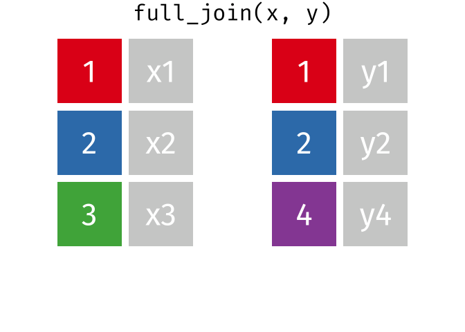
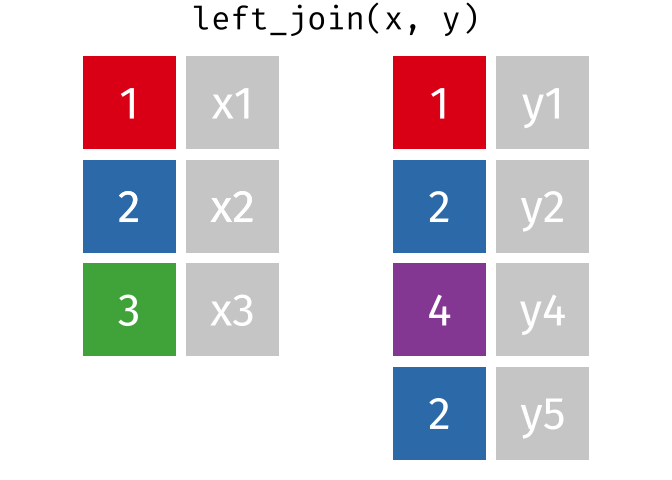
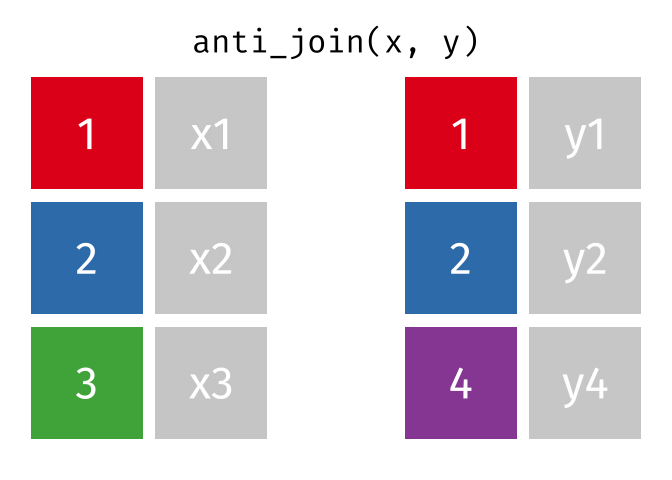

library(dplyr) # for %>%, bind_rows(), bind_cols(), the join functions, distinct()
library(tidyr) # for pivot_longer(), pivot_wider(), replace_na()
library(tibble) # for tribble(), tibble()
# devtools::install_github("ianhussey/truffle")
library(truffle) # for simulating data and adding duplicates13 Binding and joining
Data from a single study is often spread across several data frames: demographics in one file, questionnaire scores in another, and each timepoint, task, or data collection site in its own file. Before you can analyze it, you need to combine them.
There are two ways to combine data frames:
- Binding puts data frames together by position: on top of each other (
bind_rows()) or side by side (bind_cols()). - Joining puts data frames together by matching the values in one or more key columns, usually a participant ID (e.g.,
left_join()).
This chapter shows why binding rows is useful, why binding columns is dangerous, and how to use joins to combine data safely.
13.1 Example data
We’ll simulate item-level data for two depression scales, along with participants’ age and gender, in the same way as in the Reshaping and pivots chapter, but with only 8 participants so that it is easy to see what happens to each one.
dat_likert_wide <-
truffle_likert(study_design = "crosssectional",
n_per_condition = 8,
factors = c("X1_latent", "X2_latent"),
prefixes = c("depression1_item", "depression2_item"),
alpha = c(.70, .70),
n_items = c(10, 7),
n_levels = 7,
r_among_outcomes = 0.80,
seed = 43) %>%
truffle_demographics()13.1.0.1 Exercise
Practice what you learned in the previous chapter by splitting this data into two data frames:
dat_demographics, containing the ‘id’, ‘age’, and ‘gender’ columns. No pivot needed.dat_likert_scored, containing ‘id’ and each participant’s mean score on each depression scale, with one row per participant:- Pivot the wide data to long.
- Calculate the mean score for each participant on each scale.
- Pivot the data back to wide, so that there is one row per participant.
NoteClick to show answer
dat_demographics <- dat_likert_wide %>%
select(id, age, gender)
dat_likert_scored <- dat_likert_wide %>%
# one row per participant per item, with separate scale and item columns
pivot_longer(cols = starts_with("depression"),
names_to = c("scale", "item"),
names_sep = "_",
values_to = "response") %>%
# mean score for each participant on each scale
group_by(id, scale) %>%
summarize(mean_score = mean(response),
.groups = "drop") %>%
# one row per participant
pivot_wider(names_from = scale,
values_from = mean_score)
dat_demographics| id | age | gender |
|---|---|---|
| 1 | 20 | female |
| 2 | 39 | female |
| 3 | 30 | male |
| 4 | 36 | female |
| 5 | 28 | male |
| 6 | 32 | male |
| 7 | 40 | female |
| 8 | 29 | female |
dat_likert_scored| id | depression1 | depression2 |
|---|---|---|
| 1 | 4.4 | 3.714286 |
| 2 | 5.8 | 4.285714 |
| 3 | 3.6 | 5.142857 |
| 4 | 4.1 | 3.142857 |
| 5 | 4.9 | 4.571429 |
| 6 | 3.8 | 4.571429 |
| 7 | 3.7 | 3.857143 |
| 8 | 3.2 | 5.142857 |
names_sep = "_" splits names such as “depression1_item1” into the scale and the item, so that group_by(id, scale) can calculate one mean per participant per scale. Pivoting back to wide gives one column per scale.
The rest of the chapter uses these two data frames, so make sure you have created them before continuing.
13.2 Binding
13.2.1 bind_rows(): stacking data frames with the same columns
bind_rows() puts data frames on top of each other. This is useful, and safe, when each data frame contains different observations of the same variables, e.g., data from two data collection sites, or from the same questionnaire exported in several batches:
dat_site_1 <- tribble(
~id, ~age, ~gender,
1, 23, "female",
2, 31, "male"
)
dat_site_2 <- tribble(
~id, ~gender, ~age,
3, "non-binary", 27,
4, "female", 45
)
bind_rows(dat_site_1, dat_site_2)| id | age | gender |
|---|---|---|
| 1 | 23 | female |
| 2 | 31 | male |
| 3 | 27 | non-binary |
| 4 | 45 | female |
Note that the columns in dat_site_2 are in a different order, but bind_rows() matches them by name, not by position.
The .id argument adds a column recording which data frame each row came from, which is often useful information to keep:
bind_rows(site_1 = dat_site_1,
site_2 = dat_site_2,
.id = "site")| site | id | age | gender |
|---|---|---|---|
| site_1 | 1 | 23 | female |
| site_1 | 2 | 31 | male |
| site_2 | 3 | 27 | non-binary |
| site_2 | 4 | 45 | female |
If a column is present in only some of the data frames, it is filled with NA for the others. That is often what you want, but it can also hide problems, e.g., if a column was called ‘age’ at one site and ‘Age’ at the other, you get two half-empty columns rather than an error. Check the result.
rbind() is the base R equivalent. It also matches columns by name, but throws an error if the data frames don’t have exactly the same columns.
13.2.2 Why bind_cols() should be avoided
bind_cols() (or base R’s cbind()) puts data frames side by side. It does not match rows by anything: the first row of one data frame is placed next to the first row of the other, the second next to the second, and so on. This only gives the correct result if both data frames contain exactly the same participants in exactly the same order.
The bind_cols() documentation itself warns: “Where possible prefer using a join to combine multiple data frames. bind_cols() binds the rows in order in which they appear so it is easy to create meaningless results without realising it.”
13.2.2.1 Row mismatches
In real data, rows are often in different orders in different files, e.g., because one was sorted by participant ID and the other by the time of data collection. We can mimic this by shuffling the rows:
set.seed(42)
dat_demographics_shuffled <- dat_demographics %>%
# shuffle the rows
slice_sample(prop = 1)
dat_likert_scored_shuffled <- dat_likert_scored %>%
# shuffle the rows
slice_sample(prop = 1)
dat_combined_bind_cols <- bind_cols(dat_demographics_shuffled,
dat_likert_scored_shuffled)
dat_combined_bind_cols| id…1 | age | gender | id…4 | depression1 | depression2 |
|---|---|---|---|---|---|
| 1 | 20 | female | 8 | 3.2 | 5.142857 |
| 5 | 28 | male | 7 | 3.7 | 3.857143 |
| 8 | 29 | female | 4 | 4.1 | 3.142857 |
| 6 | 32 | male | 1 | 4.4 | 3.714286 |
| 2 | 39 | female | 5 | 4.9 | 4.571429 |
| 4 | 36 | female | 2 | 5.8 | 4.285714 |
| 3 | 30 | male | 3 | 3.6 | 5.142857 |
| 7 | 40 | female | 6 | 3.8 | 4.571429 |
13.2.2.2 Exercise
Why is this result dangerous?
NoteClick to show answer
Each row now combines the demographics of one participant with the depression scores of another, as you can see by comparing ‘id…1’ and ‘id…4’ (bind_cols() renamed the two ‘id’ columns because a data frame can’t have two columns with the same name). Any analysis of the relationship between age or gender and depression would be meaningless, and nothing in the code or output warns you.
13.2.2.3 Invisible row mismatches
Without an ID column in both data frames, it’s not even possible to see that anything has gone wrong:
dat_demographics_shuffled_no_id <- dat_demographics_shuffled %>%
select(-id)
dat_likert_scored_shuffled_no_id <- dat_likert_scored_shuffled %>%
select(-id)
bind_cols(dat_demographics_shuffled_no_id,
dat_likert_scored_shuffled_no_id)| age | gender | depression1 | depression2 |
|---|---|---|---|
| 20 | female | 3.2 | 5.142857 |
| 28 | male | 3.7 | 3.857143 |
| 29 | female | 4.1 | 3.142857 |
| 32 | male | 4.4 | 3.714286 |
| 39 | female | 4.9 | 4.571429 |
| 36 | female | 5.8 | 4.285714 |
| 30 | male | 3.6 | 5.142857 |
| 40 | female | 3.8 | 4.571429 |
13.2.2.4 More severe row mismatches throw errors
Real data also often has participants missing from one data frame, or duplicated rows in another, e.g., because a participant started the survey twice. Let’s create both problems:
set.seed(42)
dat_demographics_missing <- dat_demographics %>%
# remove 25% of rows, and shuffle the rest
slice_sample(prop = 0.75)
dat_likert_scored_duplicates <- dat_likert_scored %>%
# duplicate some rows
dirt_duplicates(prop = 0.25) %>%
# shuffle the rows
slice_sample(prop = 1)
dat_demographics_missing| id | age | gender |
|---|---|---|
| 1 | 20 | female |
| 5 | 28 | male |
| 8 | 29 | female |
| 6 | 32 | male |
| 2 | 39 | female |
| 4 | 36 | female |
dat_likert_scored_duplicates| id | depression1 | depression2 |
|---|---|---|
| 6 | 3.8 | 4.571429 |
| 5 | 4.9 | 4.571429 |
| 2 | 5.8 | 4.285714 |
| 1 | 4.4 | 3.714286 |
| 3 | 3.6 | 5.142857 |
| 8 | 3.2 | 5.142857 |
| 1 | 4.4 | 3.714286 |
| 4 | 4.1 | 3.142857 |
| 7 | 3.7 | 3.857143 |
| 2 | 5.8 | 4.285714 |
The data frames now have different numbers of rows, so bind_cols() throws an error:
bind_cols(dat_demographics_missing,
dat_likert_scored_duplicates)Error in `bind_cols()`:
! Can't recycle `..1` (size 6) to match `..2` (size 10).An error is better than silently wrong results, but it doesn’t help you combine the data. Joins do.
13.3 Joins
Joins combine two data frames by matching rows that have the same values in one or more key columns, specified with the by argument. The first data frame is called x and the second y. Because rows are matched by their values, the order of the rows doesn’t matter.
There are two types of joins:
- Mutating joins add the columns of
ytox:full_join(),left_join(),right_join(), andinner_join(). They differ in which rows they keep when a key is present in only one of the data frames. - Filtering joins keep or drop rows of
xdepending on whether they have a match iny, without adding any columns:semi_join()andanti_join().
The examples below all use dat_demographics_missing as x and dat_likert_scored_duplicates as y. Sorted by id, they look like this:
dat_demographics_missing %>%
arrange(id)| id | age | gender |
|---|---|---|
| 1 | 20 | female |
| 2 | 39 | female |
| 4 | 36 | female |
| 5 | 28 | male |
| 6 | 32 | male |
| 8 | 29 | female |
dat_likert_scored_duplicates %>%
arrange(id)| id | depression1 | depression2 |
|---|---|---|
| 1 | 4.4 | 3.714286 |
| 1 | 4.4 | 3.714286 |
| 2 | 5.8 | 4.285714 |
| 2 | 5.8 | 4.285714 |
| 3 | 3.6 | 5.142857 |
| 4 | 4.1 | 3.142857 |
| 5 | 4.9 | 4.571429 |
| 6 | 3.8 | 4.571429 |
| 7 | 3.7 | 3.857143 |
| 8 | 3.2 | 5.142857 |
Note that participants 3, 7 are missing from the demographics data, and that some participants have duplicated rows in the depression data.
The animations in this section are from Garrick Aden-Buie’s tidyexplain.
13.3.1 Mutating joins
13.3.1.1 full_join()
Keeps all rows from both x and y. Where a row has no match in the other data frame, the new columns are filled with NA.

dat_full_join <- full_join(x = dat_demographics_missing,
y = dat_likert_scored_duplicates,
by = "id")
dat_full_join %>%
arrange(id)| id | age | gender | depression1 | depression2 |
|---|---|---|---|---|
| 1 | 20 | female | 4.4 | 3.714286 |
| 1 | 20 | female | 4.4 | 3.714286 |
| 2 | 39 | female | 5.8 | 4.285714 |
| 2 | 39 | female | 5.8 | 4.285714 |
| 3 | NA | NA | 3.6 | 5.142857 |
| 4 | 36 | female | 4.1 | 3.142857 |
| 5 | 28 | male | 4.9 | 4.571429 |
| 6 | 32 | male | 3.8 | 4.571429 |
| 7 | NA | NA | 3.7 | 3.857143 |
| 8 | 29 | female | 3.2 | 5.142857 |
13.3.1.2 Exercise
Compare one participant’s age and depression scores in the original data frames and in the joined data. Are they correct? What issues still remain?
NoteClick to show answer
Each participant’s age, gender, and depression scores are now correctly matched, despite the different row orders. Two issues remain: participants who were missing from the demographics data have NA for age and gender, and the duplicated rows in the depression data are still duplicated in the joined data. Joins combine data; they don’t fix problems that are already in it.
13.3.1.3 left_join()
Keeps all rows from x. Rows in x with no match in y get NA in the new columns, and rows in y with no match in x are dropped.
This is the most commonly used join, because it keeps the structure of the data frame you start with, e.g., “add the demographics to the data of all the participants who completed the study”.
If a key appears more than once in y, the matching row in x is repeated:

dat_left_join <- left_join(x = dat_demographics_missing,
y = dat_likert_scored_duplicates,
by = "id")
dat_left_join %>%
arrange(id)| id | age | gender | depression1 | depression2 |
|---|---|---|---|---|
| 1 | 20 | female | 4.4 | 3.714286 |
| 1 | 20 | female | 4.4 | 3.714286 |
| 2 | 39 | female | 5.8 | 4.285714 |
| 2 | 39 | female | 5.8 | 4.285714 |
| 4 | 36 | female | 4.1 | 3.142857 |
| 5 | 28 | male | 4.9 | 4.571429 |
| 6 | 32 | male | 3.8 | 4.571429 |
| 8 | 29 | female | 3.2 | 5.142857 |
13.3.1.4 right_join()
Keeps all rows from y. Rows in y with no match in x get NA in the new columns. right_join(x, y) gives the same rows as left_join(y, x), with the columns in a different order, so most people only use left_join() and change the order of the data frames.
dat_right_join <- right_join(x = dat_demographics_missing,
y = dat_likert_scored_duplicates,
by = "id")
dat_right_join %>%
arrange(id)| id | age | gender | depression1 | depression2 |
|---|---|---|---|---|
| 1 | 20 | female | 4.4 | 3.714286 |
| 1 | 20 | female | 4.4 | 3.714286 |
| 2 | 39 | female | 5.8 | 4.285714 |
| 2 | 39 | female | 5.8 | 4.285714 |
| 3 | NA | NA | 3.6 | 5.142857 |
| 4 | 36 | female | 4.1 | 3.142857 |
| 5 | 28 | male | 4.9 | 4.571429 |
| 6 | 32 | male | 3.8 | 4.571429 |
| 7 | NA | NA | 3.7 | 3.857143 |
| 8 | 29 | female | 3.2 | 5.142857 |
13.3.1.5 inner_join()
Keeps only the rows that have a match in both x and y.
dat_inner_join <- inner_join(x = dat_demographics_missing,
y = dat_likert_scored_duplicates,
by = "id")
dat_inner_join %>%
arrange(id)| id | age | gender | depression1 | depression2 |
|---|---|---|---|---|
| 1 | 20 | female | 4.4 | 3.714286 |
| 1 | 20 | female | 4.4 | 3.714286 |
| 2 | 39 | female | 5.8 | 4.285714 |
| 2 | 39 | female | 5.8 | 4.285714 |
| 4 | 36 | female | 4.1 | 3.142857 |
| 5 | 28 | male | 4.9 | 4.571429 |
| 6 | 32 | male | 3.8 | 4.571429 |
| 8 | 29 | female | 3.2 | 5.142857 |
Be careful with inner_join(): it silently drops participants who are missing from either data frame. This is sometimes what you want, but you should know how many participants were dropped and why.
13.3.2 Filtering joins
13.3.2.1 semi_join()
Keeps the rows of x that have a match in y, and only the columns of x. Unlike inner_join(), it never duplicates rows of x, even if a key appears several times in y.
dat_semi_join <- semi_join(x = dat_demographics_missing,
y = dat_likert_scored_duplicates,
by = "id")
dat_semi_join %>%
arrange(id)| id | age | gender |
|---|---|---|
| 1 | 20 | female |
| 2 | 39 | female |
| 4 | 36 | female |
| 5 | 28 | male |
| 6 | 32 | male |
| 8 | 29 | female |
13.3.2.2 anti_join()
Keeps the rows of x that do not have a match in y, and only the columns of x. This is very useful for checking which rows will fail to match before you join, and for applying exclusions, e.g., removing all participants whose IDs are in a data frame of participants to be excluded.

Here, x and y are swapped to find the participants with depression scores but no demographics:
dat_anti_join <- anti_join(x = dat_likert_scored_duplicates,
y = dat_demographics_missing,
by = "id")
dat_anti_join %>%
arrange(id)| id | depression1 | depression2 |
|---|---|---|
| 3 | 3.6 | 5.142857 |
| 7 | 3.7 | 3.857143 |
13.3.2.3 Exercise
Using dat_demographics_missing and dat_likert_scored_duplicates:
- Keep the rows of the depression data that have a match in the demographics data, keeping only the columns of the depression data. How many rows are there? Are there duplicates?
- Keep the rows of the demographics data that do not have a match in the depression data. How many rows are there? Why?
NoteClick to show answer
semi_join(x = dat_likert_scored_duplicates,
y = dat_demographics_missing,
by = "id") %>%
arrange(id)| id | depression1 | depression2 |
|---|---|---|
| 1 | 4.4 | 3.714286 |
| 1 | 4.4 | 3.714286 |
| 2 | 5.8 | 4.285714 |
| 2 | 5.8 | 4.285714 |
| 4 | 4.1 | 3.142857 |
| 5 | 4.9 | 4.571429 |
| 6 | 3.8 | 4.571429 |
| 8 | 3.2 | 5.142857 |
anti_join(x = dat_demographics_missing,
y = dat_likert_scored_duplicates,
by = "id")| id | age | gender |
|---|
semi_join()keeps the rows of the depression data that have a match. The duplicates are still there, because they were already inx: filtering joins never add duplicates, but they don’t remove them either.anti_join()returns no rows, because every participant in the demographics data also has depression data.
13.3.3 Joining by more than one column
Sometimes both data frames contain more than one column in common. For example, data from a pre-post study where both timepoints also record the participant’s condition:
dat_baseline <- tribble(
~id, ~condition, ~score_baseline,
1, "control", 12,
2, "intervention", 11,
3, "control", 13
)
dat_followup <- tribble(
~id, ~condition, ~score_followup,
1, "control", 13,
2, "intervention", 16,
3, "control", 14
)If you join only by ‘id’, the columns that are in both data frames but not in by are kept twice, with the suffixes “.x” and “.y”:
left_join(dat_baseline, dat_followup, by = "id")| id | condition.x | score_baseline | condition.y | score_followup |
|---|---|---|---|---|
| 1 | control | 12 | control | 13 |
| 2 | intervention | 11 | intervention | 16 |
| 3 | control | 13 | control | 14 |
Joining by both columns gives a single ‘condition’ column. It also requires both ‘id’ and ‘condition’ to match, so a participant recorded in different conditions at the two timepoints (e.g., due to a data entry error) would not be matched:
left_join(dat_baseline, dat_followup, by = c("id", "condition"))| id | condition | score_baseline | score_followup |
|---|---|---|---|
| 1 | control | 12 | 13 |
| 2 | intervention | 11 | 16 |
| 3 | control | 13 | 14 |
13.3.4 Joining columns with different names
The key columns don’t need to have the same name in both data frames. join_by() lets you specify which column in x matches which column in y:
dat_followup_renamed <- dat_followup %>%
rename(participant_id = id)
left_join(dat_baseline,
dat_followup_renamed,
by = join_by(id == participant_id, condition))| id | condition | score_baseline | score_followup |
|---|---|---|---|
| 1 | control | 12 | 13 |
| 2 | intervention | 11 | 16 |
| 3 | control | 13 | 14 |
The key columns do need to be the same type: you can’t join a numeric ‘id’ to a character ‘id’, even if the values look the same. Convert one of them first, e.g., with mutate(id = as.numeric(id)).
13.3.5 Joining more than two data frames
Joins combine two data frames at a time, but they can be chained in a pipe to combine as many as you need. The result of each join becomes x for the next one:
dat_baseline %>%
left_join(dat_followup, by = c("id", "condition")) %>%
left_join(dat_demographics, by = "id")| id | condition | score_baseline | score_followup | age | gender |
|---|---|---|---|---|---|
| 1 | control | 12 | 13 | 20 | female |
| 2 | intervention | 11 | 16 | 39 | female |
| 3 | control | 13 | 14 | 30 | male |
13.3.5.1 Exercise
A shop recorded the number of purchases each customer made in each of three stores. Each store only recorded the customers who bought something there.
set.seed(42)
dat_customers <- tibble(id = 1:10)
dat_store_1 <- tibble(id = 1:10,
purchases_store_1 = rnbinom(n = 10, size = 2, mu = 3)) %>%
# only some customers bought something in this store
slice_sample(prop = 0.7)
dat_store_2 <- tibble(id = 1:10,
purchases_store_2 = rnbinom(n = 10, size = 2, mu = 1.5)) %>%
slice_sample(prop = 0.5)
dat_store_3 <- tibble(id = 1:10,
purchases_store_3 = rnbinom(n = 10, size = 2, mu = 1.75)) %>%
slice_sample(prop = 0.4)- Create a data frame with one row for every customer in
dat_customersand their purchases in each store. - What does
NAmean in this data? Replace it with the appropriate value usingreplace_na()from {tidyr}. - Calculate each customer’s total purchases.
NoteClick to show answer
dat_customers %>%
left_join(dat_store_1, by = "id") %>%
left_join(dat_store_2, by = "id") %>%
left_join(dat_store_3, by = "id") %>%
mutate(across(starts_with("purchases"), \(x) replace_na(x, 0)),
purchases_total = purchases_store_1 + purchases_store_2 + purchases_store_3) %>%
arrange(id)| id | purchases_store_1 | purchases_store_2 | purchases_store_3 | purchases_total |
|---|---|---|---|---|
| 1 | 4 | 0 | 0 | 4 |
| 2 | 4 | 0 | 0 | 4 |
| 3 | 4 | 3 | 0 | 7 |
| 4 | 0 | 3 | 0 | 3 |
| 5 | 5 | 1 | 2 | 8 |
| 6 | 0 | 0 | 0 | 0 |
| 7 | 0 | 0 | 0 | 0 |
| 8 | 5 | 0 | 2 | 7 |
| 9 | 4 | 1 | 0 | 5 |
| 10 | 3 | 0 | 0 | 3 |
Starting with dat_customers and using left_join() keeps every customer, including those who bought nothing in any store. Here, NA means that a customer made no purchases in that store, so replacing it with 0 is correct. Be careful about doing this in general: in most psychology data, NA means that a value is unknown, not that it is zero, e.g., a participant who did not complete a questionnaire did not score 0 on it.
Writing replace_na() once for each column would also work. across() applies it to every column that starts with “purchases”.
13.4 Duplicate keys multiply rows
Why not use full_join() for everything, since it never loses any rows? Because it, like all mutating joins, combines every matching row in x with every matching row in y. If a key appears twice in x and twice in y, the joined data has four rows for it. Let’s add duplicates to both data frames:
set.seed(42)
dat_demographics_many_duplicates <- dat_demographics %>%
dirt_duplicates(prop = 1)
dat_likert_scored_many_duplicates <- dat_likert_scored %>%
dirt_duplicates(prop = 1)
dat_full_join_duplicates <- full_join(x = dat_demographics_many_duplicates,
y = dat_likert_scored_many_duplicates,
by = "id")
nrow(dat_demographics_many_duplicates)[1] 16nrow(dat_likert_scored_many_duplicates)[1] 16nrow(dat_full_join_duplicates)[1] 32The joined data has twice as many rows as either of the data frames it came from, even though there are only 8 participants. {dplyr} warns about a “many-to-many relationship” in this situation, but if only one of the data frames has duplicates, it doesn’t warn you at all, and the duplicated rows will inflate your sample size and bias your results.
You can tell the join what you expect with the relationship argument. If each participant should appear only once in each data frame, relationship = "one-to-one" turns duplicates into an error:
left_join(x = dat_demographics_missing,
y = dat_likert_scored_duplicates,
by = "id",
relationship = "one-to-one")Error in `left_join()`:
! Each row in `x` must match at most 1 row in `y`.
ℹ Row 1 of `x` matches multiple rows in `y`.13.4.0.1 Exercise
How can you a) find out how many duplicate rows dat_full_join contains, and b) remove them? Hint: the Data transformation I and Data transformation III chapters covered the functions you need. Would it be better to do this before or after joining?
NoteClick to show answer
# a) participants with more than one row
dat_full_join %>%
count(id) %>%
filter(n > 1)| id | n |
|---|---|
| 1 | 2 |
| 2 | 2 |
# b) remove rows that are exact duplicates across all columns
dat_full_join %>%
distinct() %>%
arrange(id)| id | age | gender | depression1 | depression2 |
|---|---|---|---|---|
| 1 | 20 | female | 4.4 | 3.714286 |
| 2 | 39 | female | 5.8 | 4.285714 |
| 3 | NA | NA | 3.6 | 5.142857 |
| 4 | 36 | female | 4.1 | 3.142857 |
| 5 | 28 | male | 4.9 | 4.571429 |
| 6 | 32 | male | 3.8 | 4.571429 |
| 7 | NA | NA | 3.7 | 3.857143 |
| 8 | 29 | female | 3.2 | 5.142857 |
distinct() with no arguments removes rows that are identical in every column, so it works however many columns the data has. It is better to remove duplicates before joining, in each data frame separately, because then the join can’t multiply them, and you can use relationship = "one-to-one" to check that it worked. Also note that distinct() only removes exact duplicates. If a participant has two rows with different values (e.g., they completed the survey twice), you need to decide which row to keep, e.g., the first attempt.
13.5 Checking your joins
Joins rarely throw errors, so you need to check that they did what you expected. A few habits catch most problems:
- Check that the keys are unique before joining, e.g.,
dat %>% count(id) %>% filter(n > 1)should return no rows. - Check which rows won’t match, with
anti_join()in both directions. - Compare the number of rows before and after joining, e.g., with
nrow(). Aleft_join()should have the same number of rows asx. If it has more, there were duplicate keys iny. - State your expectations in the code, with
relationship = "one-to-one"(or “one-to-many”, etc.), andunmatched = "error"if the join should not drop any rows, e.g., in aninner_join()where every participant should be in both data frames.
13.6 Key functions
The main functions covered in this chapter:
| Function | Package | What it does |
|---|---|---|
bind_rows() |
{dplyr} | Stacks data frames on top of each other, matching columns by name. |
bind_cols() |
{dplyr} | Puts data frames side by side by row position, without matching rows. Usually best avoided. |
full_join() |
{dplyr} | Adds the columns of y to x, keeping all rows of both. |
left_join() |
{dplyr} | Adds the columns of y to x, keeping all rows of x. |
right_join() |
{dplyr} | Adds the columns of y to x, keeping all rows of y. |
inner_join() |
{dplyr} | Adds the columns of y to x, keeping only rows with a match in both. |
semi_join() |
{dplyr} | Keeps the rows of x that have a match in y, without adding columns. |
anti_join() |
{dplyr} | Keeps the rows of x that do not have a match in y, without adding columns. |
join_by() |
{dplyr} | Specifies the key columns for a join, including columns with different names in x and y. |
replace_na() |
{tidyr} | Replaces NA with a value of your choice. |
left_join(relationship = ) |
{dplyr} | States how many matches are expected for each key, e.g., “one-to-one”, so that unexpected duplicates cause an error. |
13.7 Exercises
Check your learning with the following questions. Exercises that involve running code should be done in your local copy of this chapter’s .qmd file (see the Introduction for how to get a copy).
13.7.1 Check your understanding
Answer the questions, then click the button at the bottom to check your answers.
bind_rows()matches columns by their position, so the columns must be in the same order in each data frame.- A key appears twice in
xand three times iny. How many rows doesfull_join()create for that key? - Which argument of a mutating join can make it throw an error when a participant appears more than once?
- The key columns must have the same name in both data frames.
- You can join a numeric ‘id’ column to a character ‘id’ column if the values look the same.
NoteClick to show explanations
- False.
bind_rows()matches columns by name, so their order doesn’t matter. It fills columns that are missing from some data frames withNA. - Mutating joins combine every matching row in
xwith every matching row iny: 2 x 3 = 6.
- Mutating joins combine every matching row in
relationship. E.g.,relationship = "one-to-one"throws an error if a key appears more than once in either data frame.- False.
join_by()lets you match columns with different names, e.g.,join_by(id == participant_id). - False. The key columns must be the same type, so convert one of them first, e.g., with
mutate(id = as.numeric(id)).
When is bind_rows() the right tool? Why is bind_cols() usually the wrong one?
NoteClick to show answer
bind_rows() is the right tool when several data frames contain different observations of the same variables, e.g., data from several sites or batches. It matches columns by name, so the order of the columns doesn’t matter. bind_cols() places rows next to each other by position, without checking that they belong together, so it silently produces wrong data if the rows are in a different order or a participant is missing or duplicated. A join matches rows by their key instead.
What is the difference between left_join(), inner_join(), and full_join()?
NoteClick to show answer
They differ in which rows they keep. left_join() keeps all rows of x, inner_join() keeps only rows with a match in both x and y, and full_join() keeps all rows of both. Missing matches are filled with NA in the added columns.
You left_join() a data frame of 100 participants’ scores with a data frame of demographics, and the result has 104 rows. What happened, and how would you find the problem?
NoteClick to show answer
Some IDs appear more than once in the demographics data, so the matching participants’ rows were repeated. Find them with count(id) %>% filter(n > 1) on the demographics data. Using relationship = "one-to-one" would have turned this into an error.
Why do you get columns named ‘condition.x’ and ‘condition.y’ after a join? How do you avoid this?
NoteClick to show answer
‘condition’ was in both data frames but not in by, so both versions were kept and given suffixes. If the column should be the same in both, add it to by, e.g., by = c("id", "condition"). Otherwise, remove it from one of the data frames before joining.
What is the difference between semi_join() and inner_join()? Give an example of when you would use anti_join().
NoteClick to show answer
Both keep only the rows of x that have a match in y, but inner_join() also adds the columns of y (and repeats rows of x if a key appears several times in y), whereas semi_join() keeps only the columns of x and never adds rows. anti_join() is useful for applying exclusions, e.g., anti_join(dat, dat_exclusions, by = "id"), and for finding rows that will fail to match before joining.
13.7.2 Practice
In your local copy of this chapter’s .qmd file, complete the task below. No solution is provided for this task, to reduce the temptation to peek or copy-paste. Use the hints if you get stuck.
The code below simulates data from a randomized controlled trial (RCT) of an intervention to reduce social media use, with an intervention and a waitlist control condition. Social media use was self-reported before (pre) and after (post) the intervention. Four data frames are created:
dat_rct_demographics: age and gender, which contains duplicated rows.dat_pre: social media use at pre.dat_post: social media use at post. Some participants did not complete the post measure.dat_exclusions: the IDs of participants who must be excluded.
set.seed(42)
dat_rct_demographics <-
tibble(id = 1:50) %>%
truffle_demographics() %>%
# shuffle the rows
slice_sample(prop = 1) %>%
# add duplicates
dirt_duplicates(prop = .30)
dat_pre <-
truffle_likert(study_design = "factorial_between2",
n_per_condition = 25,
factors = "X1_latent",
prefixes = "socialmediause_item",
alpha = .80,
n_items = 2,
n_levels = 7,
approx_d_between_groups = 0,
seed = 42) %>%
# keep only the first item, to mimic a 1-item measure.
# truffle_likert() has to create at least two items, so this is a workaround.
select(id, condition, socialmediause_pre = socialmediause_item1) %>%
# shuffle the rows
slice_sample(prop = 1)
dat_post <-
truffle_likert(study_design = "factorial_between2",
n_per_condition = 25,
factors = "X1_latent",
prefixes = "socialmediause_item",
alpha = .80,
n_items = 2,
n_levels = 7,
approx_d_between_groups = 0.4,
seed = 42) %>%
# keep only the first item, to mimic a 1-item measure.
select(id, condition, socialmediause_post = socialmediause_item1) %>%
# remove 25% of rows to create missing data, and shuffle the rest
slice_sample(prop = .75)
dat_exclusions <- tibble(id = c(3, 11, 12))Combine the four data frames into a single data frame named dat_combined, in which:
- There is one row for every participant who has data at pre, with
NAfor social media use at post if they did not complete it. - There is a single ‘condition’ column, rather than ‘condition.x’ and ‘condition.y’.
- Age and gender are included, without introducing duplicates.
- Participants whose IDs are in
dat_exclusionsare not included.
Check your result: how many rows should it have? Does each participant appear only once?
NoteClick to show hint
Remove the duplicates from dat_rct_demographics with distinct() before joining. Start from dat_pre and use left_join() to add dat_post (joining by both ‘id’ and ‘condition’) and the demographics. Then remove the excluded participants with anti_join(). Check the result with count(id) %>% filter(n > 1) and nrow(), or add relationship = "one-to-one" to the joins.
If you have combined the data correctly, you can run the next chunk to analyze the RCT following best practice: an ANCOVA comparing social media use at post between the conditions, controlling for social media use at pre.
fit <- lm(formula = socialmediause_post ~ socialmediause_pre + condition,
data = dat_combined)
car::Anova(fit, type = 3) %>%
report::report()